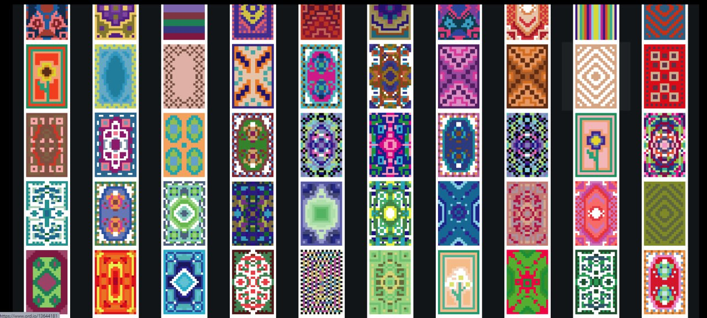

overview
Misfits was inspired by a nostalgic 90’s vibe, with a focus on streetwear and pop culture. Working with the client we created a clear style for the collection, focusing on creating something with mass appeal that could scale with the web3 space.
pfp
The collection had to appeal to all people, with a variety of skin tones, hairstyles and clothing traits inspired by fashion, streetwear and pop culture.
1/1
The 1/1’s were completely unique and stand alone, depicting the same character but in a range of different scenes.
promo
The promotional artwork carried over the same signature style making consistent and unique branding. Placing the character into a variety of scenes creating depth to the character and building cannon.
linework
Linework pieces were essential for use on the website and tied all of the assets from the collection, promotional content and 1/1’s onto the website, creating a consistent brand image.
misfits
omni
overview
BONKz was a viral sensation, a collection of cute lovable doggo PFP’s that burnt 5 Billion $BONK and brought together artists from across the ecosystem including John le, Benbauchau, Baskets and more.
unrevealed
BONKz collection launched unrevealed, allowing degens to get their hands on the assets whilst we continued to market the collection and run the art competition to get your BONKz minted as a 1/1.
pfp
The PFP was built around a small cute shiba inu dog with a pastel colour scheme and a wide variety of expressions, lending itself well to gif’s and memes.
1/1
The collection contained 100 1/1’s each drawn by a different artist who submitted them in our art competition. Great for bringing attention to artists and the project alike, this started a new trend which would be replicated by a number of projects following its success.
BONKz
OMNI
overview
Spice Finance approached OMNI to create the artwork for their collection. Inspired by the film Dune, we set to work on creating the three factions which made up the characters within the Spice lore.
three factions
There were three factions within the collection all with their own lore, traits and artwork. At the request of the client we were happy to accommodate their request.
pfp
Inspired by a cross between anime style and the aesthetic of Dune the PFPs were also available in both male and female, increasing the technical difficulty of the collection.

SPICE
omni
overview
The Fracture is a handwritten science fantasy saga built on blockchain. Focussing on bringing the best artwork and creatives together in a serious attempt at building an IP which will scale to millions.
pfp
The collection took inspiration from legendary Italian artist Giorgio de Chirico, using a cross hatch style and a mannequin character as the base. This created something unique that people of all types could identify with as their online persona.

lORE
The Fracture lore is ever evolving and developing, building on a simple principle of consequences. The scene is set with the Gods' arrival, triggered by a break in natural law and order after humans harness the power of Omnium to achieve immortality
Artwork
There is a great plethora to display the sprawling world which is developing. The lore artworks are an iconic part of the project and display the quality of the creatives which are part of the OMNI team.
FACTIONS
The lore contains three main factions, Gods, Bridged, and Forgotten. Each of which have their own place in the story and have dedicated character development in the lore.
fracture
omni

overview
Atlantic Sun - an industry leading solar panel production company. The main task for this brand was to show professional, friendly service and reliable quality.
logo
For the logo we chose a design which referenced the sun, making it clear to customers which business the company would be operating in.
color pallet
The color palette again featured the use of yellow to lean into the ‘sun’ and also featured blue and white which were used as accent and tied into the tech side of the business.

Typeface
The typeface is futuristic and attention grabbing, giving the impression the company is on the cutting edge of technology and looking towards the future.
atlatic sun
omni

overview
Ordinal Rugs is a Bitcoin based project created around the joke of being a "rug" project with the purpose of creating cool and custom rugs.
The collection features 140 unique rugs stored on Bitcoin as ordinals that can be purchased as real world rugs with the $RUG token,
The collection features 140 unique rugs stored on Bitcoin as ordinals that can be purchased as real world rugs with the $RUG token,
logo
In order to encapsulate the brands identity we created a logo that would fit its theme. The conjoined OR representing "Ordinal Rugs" in a blocky style to relate to the pixilated rugs.
color pallet
In order to further push the brands identity we created a color pallet relating to rugs of old. Themes include colors seen in Persian rugs and the sandy regions that rugs originated from
Typeface
Rugs has two fonts to represent its brand identity, one pixilated to accompany the logo and to be used as large headings.
The second font offers more readability but still retains the more simple and blocky style so as to fit in with the brand
The second font offers more readability but still retains the more simple and blocky style so as to fit in with the brand